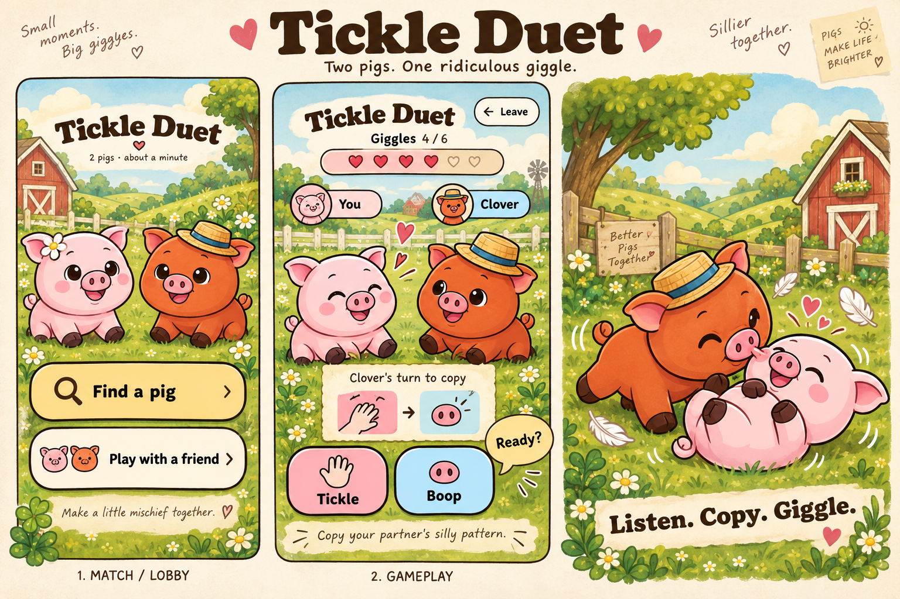

Tickle the Pig · multiplayer exploration · revised October 2, 2026
Five ways to play together
Short games where one pig needs another. Each board shows a possible lobby, the active UI, and the feeling of play.
First ranked experiment: Mud Volley. Random rivals, individual rating and a leaderboard. Duet, Trail and Picnic stay cooperative; Pageant stays social.

The next experiment · proposed, not built yet
Make it playable in a browser lab
Start with Mud Volley to test competition, then Truffle Trail to test cooperation. One temporary local server, two private phone screens, no sign-in. Keep the pigs and their reactions; make the decisions real.
Try it alone
A clearly labeled Practice Pig teaches the controls, a catch and a splat. Good for feedback and length; human rivalry still needs another person.
Play on two phones
A host screen gives each tester their own link or QR code. Hidden choices stay private; both lock and reveal together. Controlled demo rooms let us test whenever we want.
Inspect it as a developer
Two seat views, reset, swap roles, fixed seeds, slow/step-through play and a facilitator event log. This view explains state; seeing both secrets changes the game.
Rehearse random matching and ranking
A separately labeled sample queue, result and leaderboard tests the journey. Later, a small human pool tests random pairing. Sample rankings never affect real players.
| Game | Smallest useful demo | What we learn |
|---|---|---|
| Mud Volley · first | Six private toss/catch choices; compare free lanes, one-use cards and a lane cooldown. | Does reading a rival matter? Does a win feel deserved? |
| Truffle Trail · second | Three tiny boards, split clues, pictogram signals and role swaps. | Do both people contribute something the other needs? |
| Tickle Duet | Six tickle/boop phrases, replay, copy and giggle reactions. | Does a human-authored pattern make it worth repeating? |
| Picnic Relay | Four ingredients, three dishes, one handoff at a time. | Are passing and mixing satisfying for both roles? |
| Pig Pageant | One theme, six borrowed props, three humans taking runway turns. | Does having a real audience justify the wait? |
Test this rule early: one-use lane cards force each pig's final toss and catch. Try several human matches and compare a rule that keeps two choices available. A leaderboard cannot create depth in the decisions.
Full setup, rule comparisons and a 15–20 minute playtest plan →
Host/join links are facilitator tools. Released matching is still proposed as random-only. This page contains concept art and a demo plan; no playable multiplayer demo exists yet.
One shared foundation
Keep the pig at the center
Equipped pigs, tactile gestures, a warm farm scene, and expressive reactions. Competition has its own rating. No bank entry fee, stronger paid input or chat required.
Find a person, or choose practice
Proposed entry is random matchmaking only. After 12 seconds waiting, offer clearly unranked practice. Rated leaving/abandonment can count as a loss after a reconnect grace.
Server owns the shared state
Expo + existing Supabase. Atomic seats and nonce receipts in Postgres; private Realtime notifications; snapshots recover missed messages. PigStage performs the confirmed exchange.
Prototype before adding modes
Test whether Mud Volley's spent lane cards create meaningful decisions, then test two devices and rough networks. Measure human fill, placement, forfeits and new opponents.
Initial proposals, not implemented features. The written specification takes precedence over illustrative props and decorations. No app code or production database was changed.